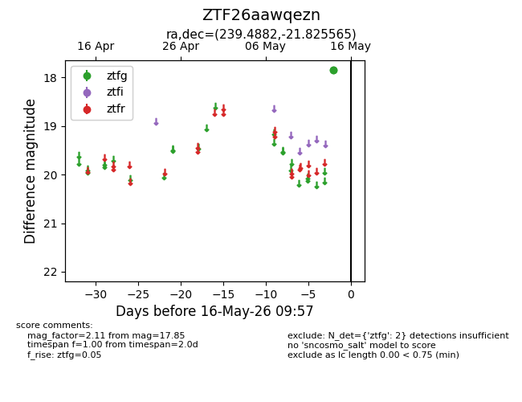
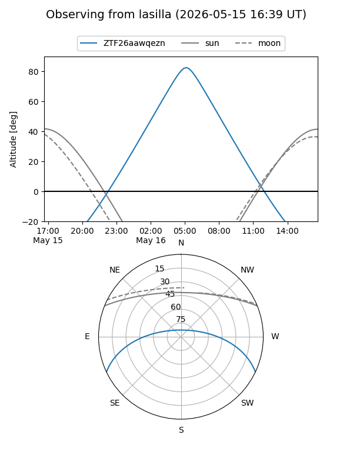
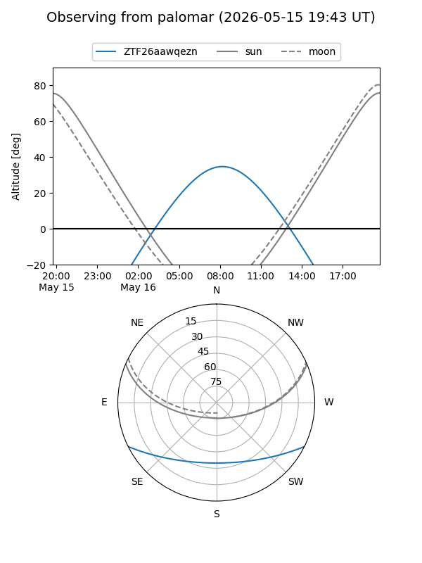

ZTF26aawqezn
Target ZTF26aawqezn at 2026-05-16 09:59
Aliases and brokers:
FINK: link
Lasair: link
ALeRCE: link
alt names
ZTF26aawqezn (ztf,fink_ztf)
Coordinates:
equatorial (ra, dec) = 239.4882,-21.82556
equatorial (HMS+DMS) = 15:57:57.16,-21:49:32.03
galactic (l, b) = (350.2837,+23.44323)
Flags:
Photometry:
last ztfg=17.85
2 ztfg detections
Lightcurve

Visibility


Additional plots